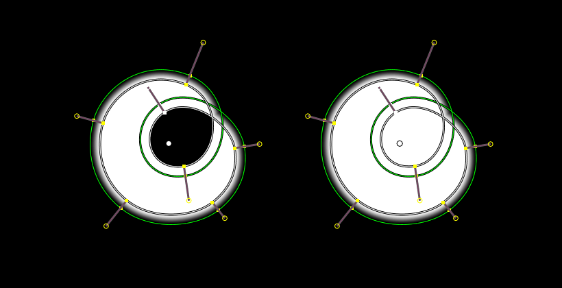
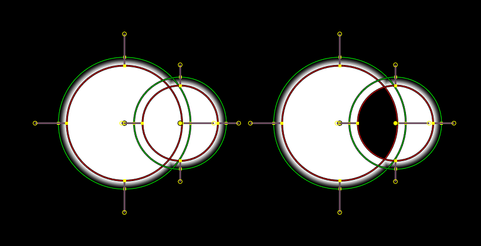

Tính Chất -- Properties¶
Tầng Màn Chắn -- Mask Layer¶
Mask Layer panel.
- Tầng Màn Chắn -- Mask Layers
- Mask layers consists of one or several splines and used to "grouped" operation on splines. Layers can be used to create complex shapes and to define how the splines interact with each other. Splines belonging to the same layer can be animated together, for example by an item from motion tracker footage. Example of such tools might be parenting the whole set of splines to single motion tracking data or simple to transform all of them together.
- Độ Đục -- Opacity
- Used to set the opacity of the mask layer.
- Invert (black/white icon)
- Inverts the values (colors) in the mask layer.
- Hòa Trộn -- Blend
The layer blending operation to perform. See Color Blend Modes.
Modes Merge Add and Merge Subtract gives better results when using a Feather on overlapping masks than straightforward mathematical addition and subtraction.
- Suy Giảm Dần -- Falloff
- Type of the Feather falloff, controls the shape of the transition between black and white.
- Đè Gối -- Overlap
- Fills the self-intersecting areas.
- Lỗ Hổng -- Holes
- Overlapping splines from the same layer will generating holes in the mask.

The Overlap option example. |

The Holes option example. |
{kind=link}
{kind=link}
Ví Dụ -- Example¶
The purpose of mask layers can be explained with an example. Suppose there are two unwanted people in the footage, and one of them goes from left to right, and the other in the opposite direction. Two mask layers can then be used to mask them separately using a single mask data-block. At the point of intersection of these shapes they will be added together rather than creating a hole, as would happen if they were on the same layer. If the motion is simple enough, a single motion tracked point can be used to drive the location of the entire mask layer.
Hiển Thị Màn Chắn -- Mask Display¶
- Mịn Màng -- Smooth
- Display the edge anti-aliased.
- Kiểu Vẽ Cạnh -- Edge Draw Type
- Style of the edge.
- Lồng -- Overlay
Added mask overlay to both Image and Clip editors.
- Chế Độ -- Mode
- Kênh Alpha -- Alpha Channel
- Which displays rasterized mask as a grayscale image.
- Tổng Hợp -- Combined
- Which multiples image/clip with the mask.
Spline Đang Hoạt Động -- Active Spline¶

Active Spline panel.
- Chuyển Vị của Mép Nhòe -- Feather Offset
The method used for calculating the offset of the mask spline feather.
- Đều Đặn -- Even
- Preserves the thickness of the feather, but can give undesirable loops of the feather curve.
- Mịn Màng -- Smooth
- Gives a nicer and smoother shape, but can also give an undesirable sharp feather when a curve segment forms an S-shape.
- Nội Suy Trọng Lượng -- Weight Interpolation
- The type of weight (thickness of feather) interpolation between points. Linear or Ease (i.e. changes occur slowly at the beginning and at the end).
- Tuần Hoàn -- Cyclic
- If the spline is closed or not.
- Lấp Kín -- Fill
- Creates splines with filled areas. If disabled, Blender will create curves with a thickness to mask out thin objects such as wires or hair.
- Kiểm Tra Sự Giao Cắt Bản Thân -- Self Intersection Check
- Prevent the feather (not the curve itself) from intersecting with itself.
Điểm Đang Hoạt Động -- Active Point¶
Active Point panel.
This panel is shown when both a tracking marker and mask is selected.
Phụ Huynh -- Parent¶
In the Movie Clip Editor it is possible to link the whole mask or its points to motion tracks. This way the mask or points will follow the tracks.
- Make Parent Ctrl-P
- Parents one or more selected spline points to the active motion tracker.
- Clear Parent Alt-P
- Clears any parenting relationship for the selected spline points.
- Phụ Huynh -- Parent
- Data ID to which the mask or spline is parented to in case of parenting to movie tracking data set to Movie Clip data-block.
- Thể Loại -- Type
- Point Track, Plane Track
- Vật Thể -- Object
- Object to parent to.
- Giám Sát/Rãnh -- Track
- Name of individual tracks.
Sắp Đặt Màn Chắn -- Mask Settings¶
- Start Frame, End Frame
- Set the frame range of the mask for Sequencer.